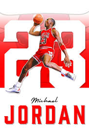

MICHAEL JORDAN

:contentReference[oaicite:0]{index=0} est considéré comme l’un des plus grands joueurs de basketball de tous les temps. Né en 1963 aux États-Unis, il développe très tôt une passion pour le sport et rejoint la NBA en 1984 après une carrière universitaire remarquable. Il devient rapidement la star des Chicago Bulls, avec lesquels il remporte six titres de champion NBA dans les années 1990. Connu pour son mental exceptionnel, son sens du jeu et ses performances décisives, il domine la ligue et marque l’histoire du sport. Son influence dépasse le basketball grâce à des partenariats majeurs, notamment avec Nike et la création de la célèbre gamme Air Jordan. Michael Jordan est aujourd’hui une légende du sport mondial, symbole de réussite, de travail et de compétition au plus haut niveau.